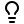

Transformace součinu na součet: −log
Prerekvizity: [L2.4] Dijkstrův algoritmus (běh). Minulá lekce [L2.6] učila Dijkstru pracovat s cenami na vrcholech; dnes ho naučíme pracovat s úlohou, kde se po cestě vůbec nesčítá, ale násobí.
Když se po cestě násobí
Slide 28 přednášky zavádí Maximum Reliability Path Problem (úloha nejspolehlivější cesty): v komunikační síti má každá hrana $(i,j)$ spolehlivost (reliability) $p(i,j)$ — pravděpodobnost, že spoj neselže. Výpadky spojů jsou na sobě nezávislé (unrelated), takže spolehlivost orientované cesty $Q$ z $s$ do $t$ je součin spolehlivostí jejích hran:
$$p(Q) = \prod_{(i,j) \in Q} p(i,j).$$
Najdi nejspolehlivější spojení z $s$ do $t$, tj. cestu maximalizující $p(Q)$.
Zkus sám: najdi v síti výše nejspolehlivější spojení $s \to t$. Vyhraje cesta s nejméně hranami?
Tři kandidáti: přímý spoj $s \to t$ má $p = 0{,}125$; cesta přes $a$ má $0{,}5 \cdot 0{,}5 = \mathbf{0{,}25}$; cesta přes $b$ má $0{,}125 \cdot 0{,}5 = 0{,}0625$. Vítězí cesta přes $a$ — dvě hrany porazí jednu, protože dvě docela spolehlivé hrany dají větší součin než jedna nespolehlivá. Počet hran o ničem nerozhoduje.
Zkus sám: proč na to nemůžeme rovnou pustit Dijkstru z [L2.4]? Najdi v zadání dva rozdíly proti shortest path.
Shortest path minimalizuje součet vah hran. Tady ale:
- hodnota cesty je součin, ne součet,
- maximalizujeme, neminimalizujeme.
A až oba rozdíly odstraníme, číhá ještě třetí podmínka: Dijkstra vyžaduje nezáporné váhy [L2.4]. Potřebujeme tedy převod, který vyřeší všechny tři věci najednou.
Funkce, která mění násobení na sčítání
Zkus sám: znáš (ze střední školy) funkci $f$ s vlastností $f(x \cdot y) = f(x) + f(y)$?
Logaritmus: $\log(ab) = \log a + \log b$. Na základu nezáleží — vlastnost má každý logaritmus se základem $b > 1$. Aplikujeme-li ho na spolehlivost cesty:
$$\log p(Q) = \log \prod_{(i,j) \in Q} p(i,j) = \sum_{(i,j) \in Q} \log p(i,j)$$
— ze součinu přes hrany je rázem součet přes hrany, přesně tvar, kterému rozumí algoritmy na nejkratší cesty.
Zkus sám: nezmění logaritmování vítěze? Která vlastnost logaritmu zaručuje, že nejlepší cesta zůstane nejlepší?
Logaritmus je rostoucí funkce: $x > y \iff \log x > \log y$. Pořadí cest podle $p(Q)$ a podle $\log p(Q)$ je tedy stejné, speciálně
$$\arg\max_Q\, p(Q) = \arg\max_Q\, \log p(Q).$$
Zbývá rozdíl max vs. min: vynásobíme $-1$ — maximalizace výrazu je minimalizace jeho minus-verze:
$$\max_Q\, \prod_{(i,j)\in Q} p(i,j) \iff \min_Q\, \sum_{(i,j)\in Q} \bigl(-\log p(i,j)\bigr).$$
Stačí tedy položit váhu hrany $c(i,j) := -\log p(i,j)$ a hledat obyčejnou nejkratší cestu.
Nezápornost zadarmo
Zbývá třetí podmínka z úvodu: smí na nové váhy $c(i,j) = -\log p(i,j)$ Dijkstra? Podívej se na průběh funkce:
Zkus sám: pro která $p$ je váha $-\log p$ nezáporná? A co dají krajní hodnoty $p = 1$ a $p \to 0$?
$-\log p \ge 0 \iff \log p \le 0 \iff p \le 1$. Pravděpodobnosti splňují $p \in (0,1]$ vždy, takže všechny nové váhy jsou nezáporné — třetí podmínku dostáváme zadarmo a Dijkstra [L2.4] smí nastoupit.
Krajní případy dávají smysl i „fyzikálně“: dokonale spolehlivá hrana $p = 1$ má váhu $-\log 1 = 0$ (projdeš zdarma, spolehlivost nezhorší); čím nespolehlivější hrana, tím větší váha, a pro $p \to 0$ váha roste nade všechny meze. Hranu s $p = 0$ (jistý výpadek) z grafu rovnou odstraň, případně jí dej váhu $+\infty$.
Na základu logaritmu nezáleží: $\log_b x = \ln x / \ln b$, takže změna základu jen přenásobí všechny váhy stejnou kladnou konstantou — a to pořadí cest podle délky nezmění (ke škálování vah se vrátíme v lekci [L2.15] Skalování vah a zachování nejkratší cesty). V ručních příkladech se hodí základ 2, když jsou spolehlivosti mocniny $\tfrac12$; obecně se píše $\ln$ nebo prostě $\log$.
Celý převod na příkladu
Síť z úvodu po transformaci $c(i,j) = -\log_2 p(i,j)$ (např. $-\log_2 0{,}5 = 1$, $-\log_2 0{,}125 = 3$):
Zkus sám: spočítej délky všech tří $s$–$t$ cest v transformovaném grafu. Souhlasí pořadí se spolehlivostmi z první try-otázky?
Přímo: $3$; přes $a$: $1 + 1 = \mathbf{2}$; přes $b$: $3 + 1 = 4$. Pořadí $a \prec$ přímo $\prec b$ přesně odpovídá spolehlivostem $0{,}25 > 0{,}125 > 0{,}0625$ — a nejde o náhodu: délka každé cesty je $-\log_2$ její spolehlivosti ($-\log_2 0{,}25 = 2$, $-\log_2 0{,}125 = 3$, $-\log_2 0{,}0625 = 4$). Transformace zachovává hodnotu, ne jen vítěze.
Běh Dijkstry [L2.4] na transformovaném grafu (včetně závěrečného převodu výsledku zpět):
Poslední krok nezapomenout: zkoušková otázka většinou chce spolehlivost (pravděpodobnost), ne záhadné číslo $l(t)$. Převod zpět je
$$p(Q^*) = b^{-l(t)} \qquad (\text{základ } b \text{ = ten, kterým jsi logaritmoval}),$$
tady $p(Q^*) = 2^{-2} = 0{,}25$ — souhlasí s ručním výpočtem z úvodu.
- Nezápornost vah platí jen pro koeficienty $p \in (0,1]$. Jakmile zadání připustí koeficienty $p > 1$ (zesílení, kurzy, násobky), je $-\log p < 0$ — vznikne graf se zápornými vahami a Dijkstra negarantuje nic (protipříklad v [L2.4]). Cyklus se součinem koeficientů $> 1$ se navíc transformuje na záporný cyklus se všemi důsledky z [L2.1].
- Výsledek běhu je $l(t) = -\log_b p(Q^*)$, ne pravděpodobnost. Bez zpětného převodu $p(Q^*) = b^{-l(t)}$ je odpověď nedokončená.

K čemu to budeTohle je druhá půlka výzbroje na zkouškovou úlohu Dangerous adventure [L2.8]: tam sedí pravděpodobnosti (přežití) na hranách i vrcholech, takže se $-\log$ z téhle lekce kombinuje se split trikem z [L2.6] (nebo se složením ceny vrcholu do vstupních hran). Důkaz, proč Dijkstra na nezáporných vahách opravdu funguje, patří do kapitoly K3 — tady stačí, že transformace jeho předpoklad splní.
- Spolehlivost cesty = součin: $p(Q) = \prod p(i,j)$; transformace $c(i,j) := -\log p(i,j)$ dává $\max \prod p \iff \min \sum (-\log p)$ — logaritmus mění součin na součet a jako rostoucí funkce zachová vítěze, minus otáčí max na min.
- Pro $p \in (0,1]$ je $-\log p \ge 0$ → nezáporné váhy → Dijkstra [L2.4] funguje; $p = 1$ dává váhu $0$, $p = 0$ znamená hranu odstranit ($+\infty$).
- Zpětný převod nezapomenout: spolehlivost optimální cesty je $b^{-l(t)}$; na základu $b > 1$ nezáleží (společná kladná konstanta).
- Koeficienty $p > 1$ transformaci rozbijí: záporné váhy, případně záporné cykly [L2.1] — Dijkstra ani jeho „max-součinová“ modifikace pak nefungují.
- V Dangerous adventure [L2.8] se $-\log$ kombinuje s cenami na vrcholech (split [L2.6], nebo složení do vstupních hran).
In the communication network we associate a reliability $p(i, j)$ with every arc from $i$ to $j$. We assume the failures of links to be unrelated. The reliability of a directed path $Q$ from $s$ to $t$ is the product of the reliability of the arcs in the path. Find the most reliable connection from $s$ to $t$.
(a) Show that we can reduce the maximum reliability path problem to a shortest path problem.
(b) Suppose you are not allowed to make reduction. Specify $O(n^2)$ algorithm for solving the maximum reliability path problem.
(c) Will your algorithms in parts a) and b) work if some of the $p(i, j)$ coefficients are strictly greater than 1?
a) Co je v zadání?
Přesně úloha z výkladu: maximalizace součinu spolehlivostí hran po cestě. Tři podotázky: (a) redukce na shortest path (= obsah této lekce), (b) přímý algoritmus v $O(n^2)$ bez redukce — tj. úprava Dijkstry, aby pracoval rovnou se součiny a maximalizací, (c) rozbor, co se stane, když některé koeficienty přerostou 1 (a přestanou tak být pravděpodobnostmi).
b) Co k tomu budeme potřebovat?
- Tato lekce — transformace $-\log$, nezápornost, zpětný převod.
- [L2.4] Dijkstrův algoritmus (běh) — pseudokód (co přesně v něm změnit), složitost $O(n^2)$, protipříklad se zápornou hranou.
- [L2.1] Záporné váhy ano, záporné cykly ne — co způsobí záporný cyklus.
c) Jak nad úlohou uvažovat?
Část (a) je doslova výklad — předveď převod včetně tří bodů: součin→součet (log), max→min (minus), nezápornost ($p \le 1$). Pro (b) si vezmi pseudokód Dijkstry z [L2.4] a projdi ho řádek po řádku s otázkou „co tu dělá sčítání/minimum a čím to nahradím, když chci přímo maximalizovat součin?“ — změní se inicializace, výběr vrcholu i relaxační podmínka, struktura (a tedy složitost) zůstane. Pro (c) projdi předpoklady obou variant: kde přesně jsme použili $p \le 1$? Zkus malý protipříklad se třemi vrcholy a jednou hranou s $p > 1$.
d) Úplné řešení
(a) Redukce. Polož $c(i,j) := -\log p(i,j)$. Pro každou cestu $Q$ platí
$$\sum_{(i,j) \in Q} c(i,j) = -\log \prod_{(i,j) \in Q} p(i,j) = -\log p(Q),$$
a protože $-\log$ je klesající funkce, je cesta s minimálním součtem $c$ přesně cesta s maximální spolehlivostí $p(Q)$. Z $p(i,j) \in (0,1]$ plyne $c(i,j) \ge 0$ (hrany s $p = 0$ odstraníme), takže výslednou instanci shortest path vyřeší Dijkstra; spolehlivost optimální cesty $Q^*$ získáme zpětně jako $p(Q^*) = b^{-l(t)}$.
(b) Přímá modifikace Dijkstry (bez redukce). Značka $l(v)$ = spolehlivost zatím nejlepší nalezené $s$–$v$ cesty:
- Inicializace: $l(s) := 1$ (prázdná cesta má spolehlivost 1), $l(v) := 0$ pro $v \ne s$.
- Výběr: mezi neuzavřenými vyber vrchol s maximální $l(v)$ a uzavři ho.
- Relaxace: $\textbf{if } l(w) < l(v) \cdot p(v,w) \textbf{ then } l(w) := l(v) \cdot p(v,w);\; p(w) := v$.
Pozor na značení: $p(w)$ je vektor předchůdců podle konvence z [L2.4] (předchozí vrchol na cestě) — nezaměnit se spolehlivostí hrany $p(v,w)$, která má dva argumenty.
Struktura algoritmu je shodná s Dijkstrou: $n$ iterací, v každé výběr extrému přes $O(n)$ vrcholů a relaxace $O(n)$ hran — celkem $O(n^2)$. Funguje ze stejného důvodu jako Dijkstra: násobení koeficientem $p \in (0,1]$ značku nikdy nezvětší (zrcadlo přičítání nezáporné váhy), takže vrchol s maximální značkou už si nemůže polepšit přes jiný neuzavřený vrchol a jeho uzavření je definitivní. (Formální důkaz = zrcadlový důkaz korektnosti Dijkstry, patří do kapitoly K3.)
(c) Obecně NE. Oba algoritmy se opírají o $p(i,j) \le 1$:
- V (a) dá hrana s $p > 1$ váhu $-\log p < 0$ — graf má záporné hrany a Dijkstrův label-setting argument padá (protipříklad v [L2.4]). Cyklus se součinem koeficientů $> 1$ se navíc zobrazí na záporný cyklus, se kterým je shortest path dokonce NP-těžký [L2.1].
- V (b) ekvivalentně: hrana s $p > 1$ může značku zvětšit, takže uzavřený vrchol by si později polepšil — hladový výběr maxima přestane být korektní.
Společný protipříklad je na grafu níže: nejspolehlivější je cesta $s \to a \to t$ s $0{,}1 \cdot 10 = 1$, ale obě varianty uzavřou $t$ hned po $s$ (transformovaná váha $-\log_2 0{,}9 \approx 0{,}152$ je menší než $-\log_2 0{,}1 \approx 3{,}32$, resp. značka $0{,}9 > 0{,}1$) a vrátí přímou hranu s $p = 0{,}9$. Odpověď: ne — s koeficienty $> 1$ není korektnost zaručena.
Nejspolehlivejsi spojeni, vektor spolehlivosti $p$ rozsah $(0,1)$, vysledne spojeni je produkt vsech spolehlivosti po ceste a) prevod ulohy nejspolehlivejsiho spojeni, aby sel resit Dijkstrou b) Modifikace Dijkstry aby resil tuhle ulohu c) bude a) a b) fungovat, kdyz bude $p$ v rozsahu $(0, \infty)$
a) Co je v zadání?
Tatáž úloha jako T01, jak ji po zkoušce zapsal student (proto česky a telegraficky — u písemky čekej anglické znění ve stylu T01). Drobné rozdíly v parametrech: spolehlivosti jsou z otevřeného intervalu $(0,1)$ a část (c) se ptá na rozsah $(0,\infty)$ místo „some coefficients $> 1$“.
b) Co k tomu budeme potřebovat?
- Úloha T01 této lekce — všechny tři části jsou tam vyřešené.
- [L2.4] Dijkstrův algoritmus (běh).
c) Jak nad úlohou uvažovat?
Ujasni si, co změna rozsahů mění a co ne: ovlivní $p \in (0,1)$ místo $(0,1]$ nezápornost vah? A je rozsah $(0,\infty)$ něco jiného než „některé koeficienty $> 1$“ z T01(c)?
d) Úplné řešení
(a), (b) beze změny jako v T01: převod $c(i,j) = -\log p(i,j)$ + Dijkstra + zpětný převod $b^{-l(t)}$; modifikovaný Dijkstra s $l(s)=1$, výběrem maxima a relaxací $l(w) < l(v)\cdot p(v,w)$. Otevřený interval $(0,1)$ situaci jen zpříjemní: $p < 1$ dává váhy ostře kladné (žádné nulové hrany), nezápornost tím spíš platí.
(c) Rozsah $(0,\infty)$ připouští koeficienty $> 1$, takže odpověď je tatáž jako v T01(c): obecně ne — transformace vyrobí záporné váhy (a z cyklů se součinem $> 1$ záporné cykly [L2.1]), modifikovaná Dijkstra ztratí korektnost hladového výběru; protipříklad u T01 funguje beze změny. Za zmínku u zkoušky stojí, že pro $p \in (0,1]$ — tedy dokud váhy po transformaci zůstávají nezáporné — funguje obojí.